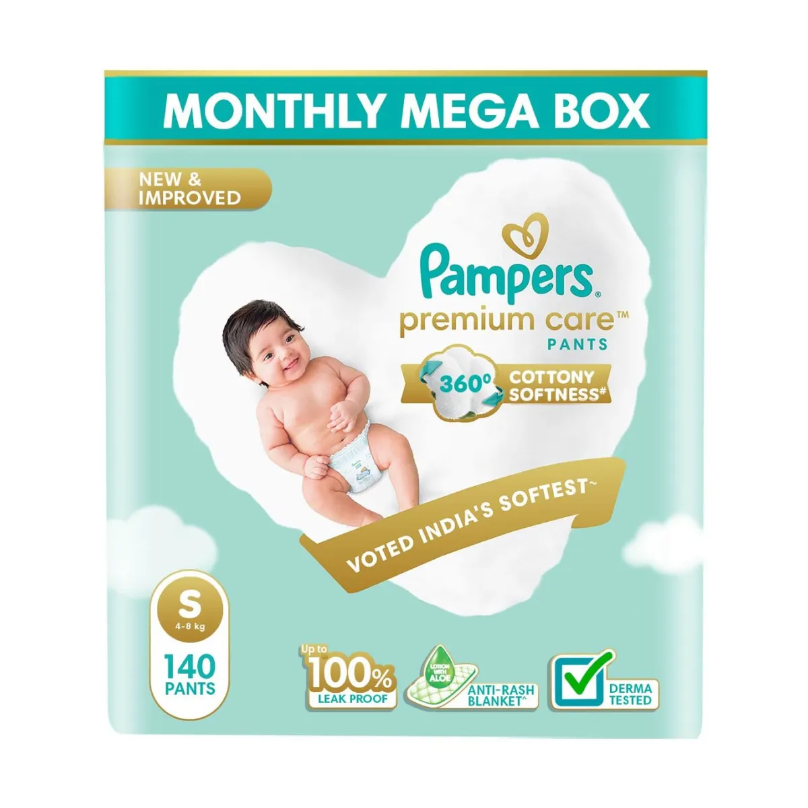

Pampers Premium Care Baby Diapers | Pant Style | S | 140 pcs
₹1273 ₹2898 56% Off
Coupons & Offers
- 🎉 Flat 15% off on ZEE5 Premium
- 🎒 ₹500 off on Zouk Bags
- 💖 50% off on 1st Month Try
Product Description
Pampers Premium Care Diapers are specially designed to give your baby 5-star skin protection. With 360° cottony softness, ultra-absorb core, and breathable material, these pant-style diapers are voted as India's softest diaper. Perfect for daily use and ensures up to 12 hours of leakage protection.
- ✔ 100% leak proof with dry feel
- ✔ Made with ultra-soft material
- ✔ Aloe vera lotion to prevent rashes
- ✔ Up to 12 hours of dryness
- ✔ Size S | 140 Pants | Monthly Pack